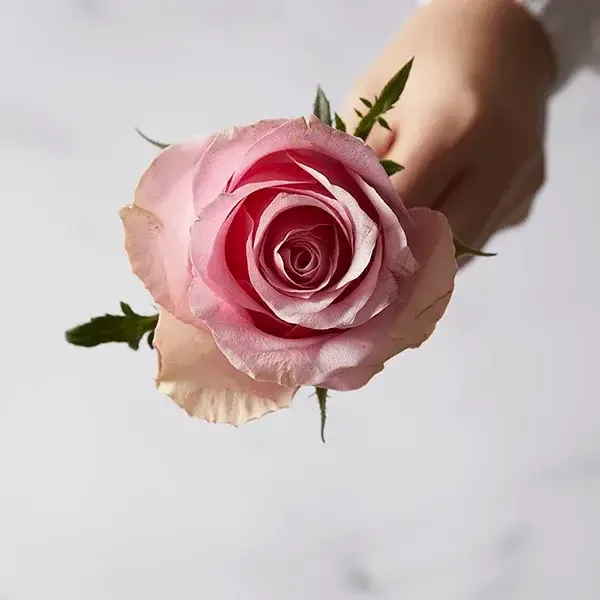
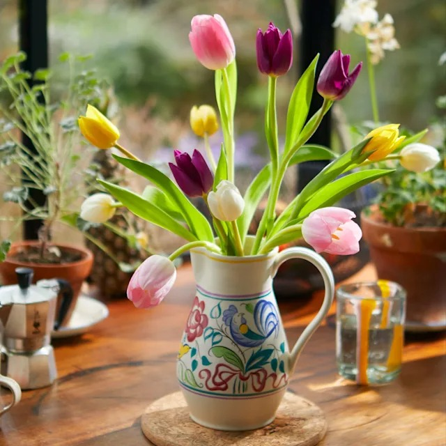
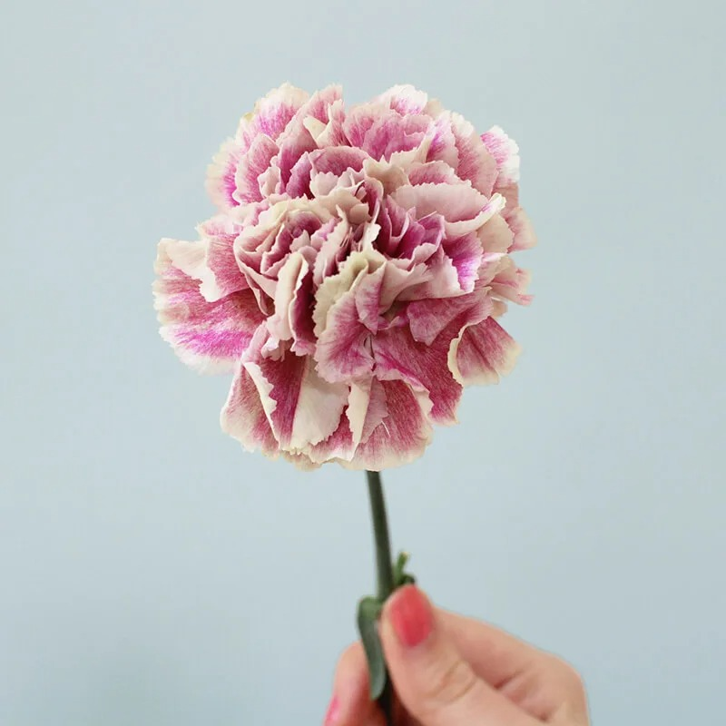
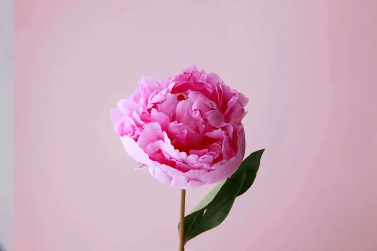
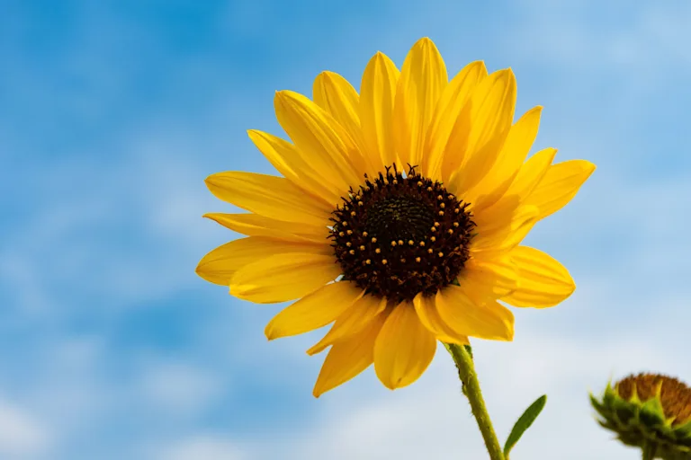
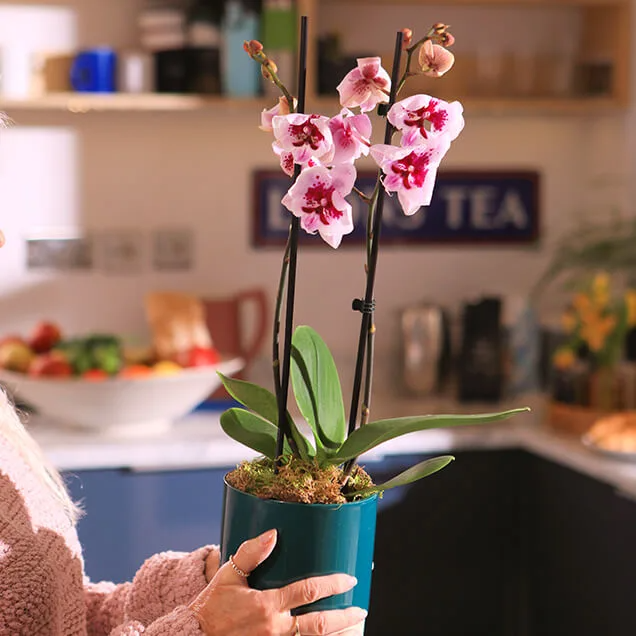

Roses are the queens of the flower world, popular for their classic beauty and romantic symbolism. They come in a rainbow of colours, with each colour telling a different story of love, friendship, or respect. They are also associated with people born in June. Roses are known for their layered petals and rich fragrance, which has made them a favourite in perfumery for centuries. Whether in a lavish bouquet or a single stem, roses capture hearts everywhere.

Tulips are springtime stars with their clean, elegant shape and a cheerful palette of colours. These bulbs are some of the earliest to bloom in spring, making them a symbol of rebirth and new beginnings. Tulips are native to Central Asia, but gained popularity in the Netherlands in the 17th century, sparking "Tulip Mania" during which bulbs were incredibly valuable. Tulips are perfect for gardens, pots, and as cut flowers in stunning floral arrangements.

Carnations are a favourite for their beautifully ruffled petals, long-lasting blooms, and delightful sweet and spicy scent. They come in a fantastic array of colours, brightening up any bouquet or floral display. Known to symbolise love and deep fascination, carnations are a top pick for everything from stunning floral arrangements to charming boutonnieres. Plus, they hold a special place as the birth month flower for January, making them an extra meaningful gift at the start of the year.

Peonies are all about lush abundance and fluffy petals. They have a luxurious appearance and a sweet fragrance. Peonies come in pink, red, white and yellow and represent wealth and honour, making them popular for special occasions. Peonies originally come from Asia, Southern Europe, and Western North America, but they are especially loved in Eastern cultures, like in China where they are called the "king of flowers."

Sunflowers are like big, sunny smiles on tall stalks, famous for their huge, bright yellow petals and hearty seeds that both birds and people love to eat. Sunflowers are special because they can turn their heads to follow the sun from sunrise to sunset. This trick makes them a symbol of energy and love. Sunflowers aren't just grown for their looks but also for their seeds, which give us healthy oils and tasty snacks. Plus, they can be used to make biodiesel fuel and even help clean up the soil.

Orchids are exotic and mysterious, making them irresistibly intriguing with their delicate, symmetrical flowers that come in a wide range of colours. Originating from diverse environments around the world, from tropical rainforests to cooler highlands, orchids are incredibly versatile. Known for their diversity, the orchid family is one of the largest families of flowering plants, with about 28,000 species worldwide. Orchids can bloom for several months under the right conditions, making them a popular choice for indoor décor.
